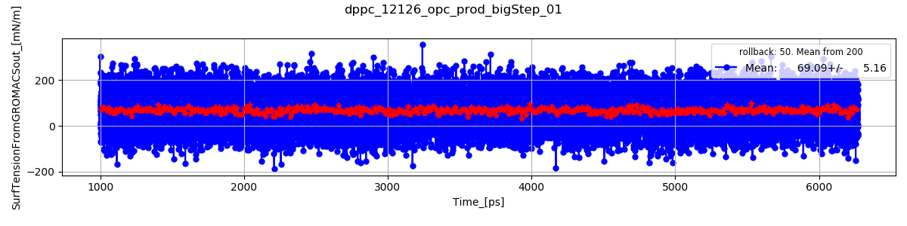
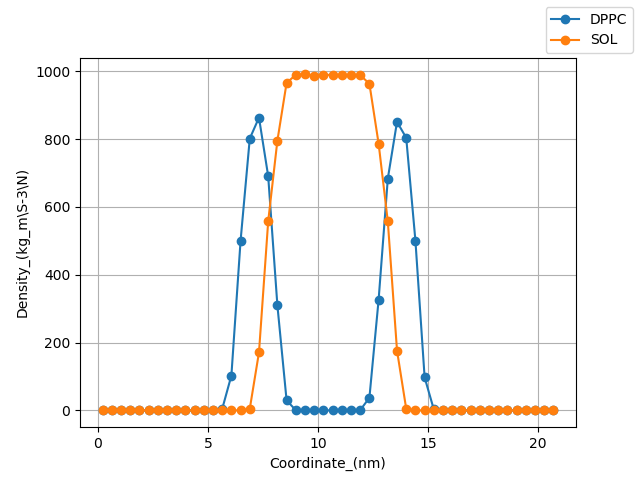
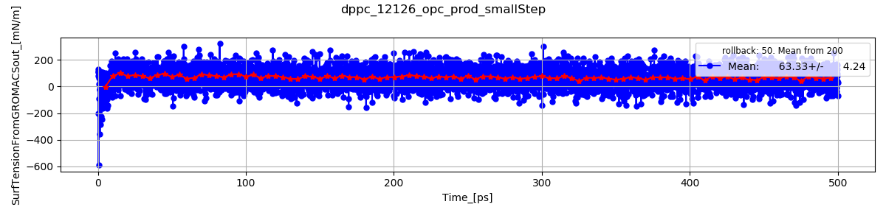
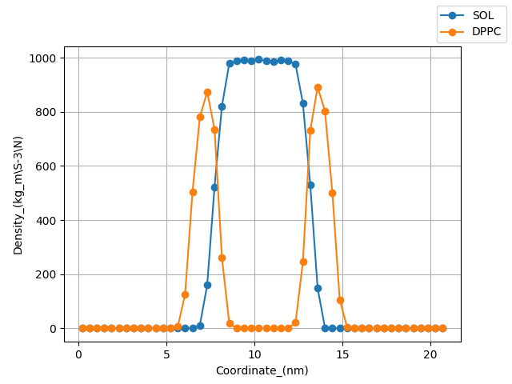
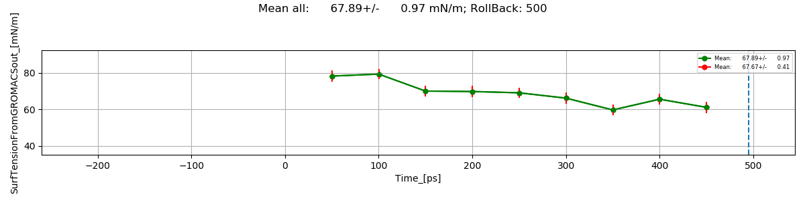

Number of lipids: 480
dppc_12126_opc_prod_bigStep_01


Final Box: 12.60 x 12.60 x 20.91
Number of Lipids: 480
AreaPerLipid: 66.188 nm2/molec
dppc_12126_opc_prod_smallStep


Final Box: 12.60 x 12.60 x 20.91
Number of Lipids: 480
AreaPerLipid: 66.188 nm2/molec
Sumary all means
| Data File |
Mean (mN/m) |
| dppc_12126_opc_prod_bigStep_01 |
69.09+/- 5.16 |
| dppc_12126_opc_prod_smallStep |
63.33+/- 4.24 |
Mean of all steps
Mean all: 67.89+/- 0.97 mN/m; RollBack: 500

Final Box: 12.60 x 12.60 x 20.91
Number of Lipids: 480
AreaPerLipid: 66.188 nm2/molec